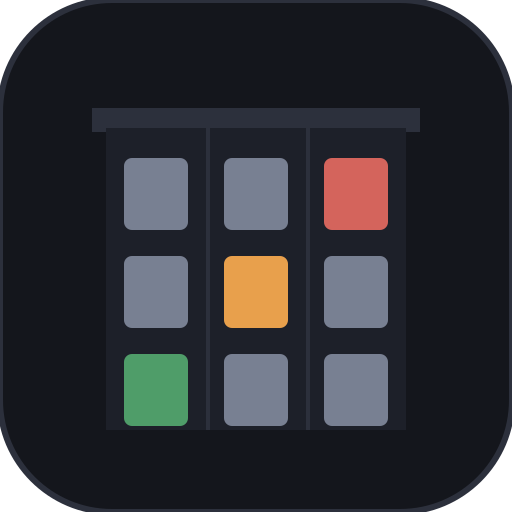
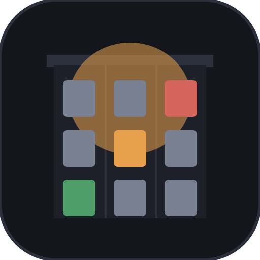

A building with a light on.
Everything here is the real spec we build against — same files, same hex codes, same rules. Download what you need, follow the usage notes, and you can't get the brand wrong. For the zipped bundle with screenshots and the fact sheet, use the press kit.
Naming
Two words. No "The".
| Form | Use |
|---|---|
| Real World | The product. Always two words, title case. |
| Real World — The Mission | First reference in formal contexts. "The Mission" is the first neighborhood, set after an em dash. |
| The Mission | In-world shorthand once "Real World" is established. |
| Never | "The Real World" (trademark collision — the leading "The" is banned), "RW", "RealWorld", a colon instead of the em dash. |
The mark
One lit window is the whole thesis.
The mark is a dark Mission rowhouse — corniced facade, a 3×3 window grid, one amber window lit at center. Someone's home; someone's watching. The lit window is always amber and always center — it's not a theming slot.
{kind=link}
{kind=link}

Icon tile
Avatars, favicons, app icons, square contexts. Reads at 48 px.
{kind=link}
{kind=link}
{kind=link}
{kind=link}
{kind=link}

Living icon
The lit window breathes on a ~9s cycle. Honors reduced-motion. Web embeds and video end-cards only.
{kind=link}
Palette
The Mission at dusk.
Wet asphalt, warm windows, fog. Roughly 80% darks and neutrals, 15% paper text, 5% accent color. Amber is the hero; green and red appear at most once per composition.
#14161cpage background#1b1e27raised surfaces#1d2029cards, tile interior#2c303chairlines, frames#ece7dcbody text#9aa0aesecondary text#e8a04caccent, lit window#4f9d69secondary accent#d4645csparinglyType is the system
stack — system-ui and friends. Bold, sentence-case headings;
"REAL WORLD" uppercase with slight tracking; "THE MISSION" wide-tracked
amber. No custom webfonts: the system face is the brand face.
Taglines & voice
Calm, not hyped.
| Tagline | Where |
|---|---|
| A neighborhood that's alive whether you're watching or not. | Primary — key art, hero support, boilerplate tail |
| A neighborhood that never stops performing. | Store tagline fields |
| Watch free. Pay to reach in. | Square key art, social banners, trailer end card |
| "The Truman Show you can visit." | Descriptive analogy — always in quotes |
Sentence case, period included, never an exclamation mark. Voice: a neighbor who knows the block — warm, plain-spoken, slightly wry. We describe what residents did, never what we made them do.
Say this
- "Tomás closes El Farolote at eleven. What he does after that is his."
- "Requests are screened, time-boxed, and public."
- "The eight mains can't be possessed — by anyone."
Never this
- "Take control of anyone in the city!" — nobody can.
- "Revolutionary AI experience" — hype + unverifiable.
- Testimonials, review quotes, or player counts we don't have.
Boilerplate
Quote-ready, three lengths.
Approved copy for press use — verbatim-safe, every claim checkable against the game.
25 words
Real World is a persistent browser life-sim: a Mission District neighborhood of AI residents who keep living whether you watch or not. Watching is free.
50 words
Real World is a persistent browser life-sim set on real Mission District street geometry. Twenty-eight AI residents keep living whether you watch or not. Watching is free; players pay only to file screened, public requests — never to control the cast.
100 words
Real World is a persistent browser life-sim — a "Truman Show" you can visit — set on real Mission District street geometry around Dolores Park. Twenty-eight AI residents keep living whether you watch or not. Watching is free. Players can pay for agency, not control: requests are screened for intent, time-boxed, resolved as opportunities the residents choose how to answer, and attributed on a public feed. The eight main characters can never be possessed by anyone — including the developer. A neighborhood that's alive whether you're watching or not.
Motifs & pairing
The grid, the line, the fog.

Window-grid divider
Section breaks and texture. One lit window, off-center — the grid alone is a motif, never a logo substitute.
Co-branding
Partner logos sit to the right of ours, separated by a hairline in
Cornice #2c303c, at equal optical weight. We don't recolor
our mark to match a partner, and we don't recolor theirs. Event and
video overlays: icon only, never the lockup over busy footage.